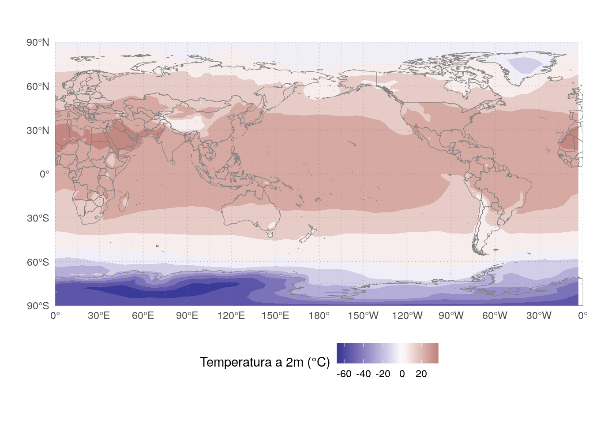
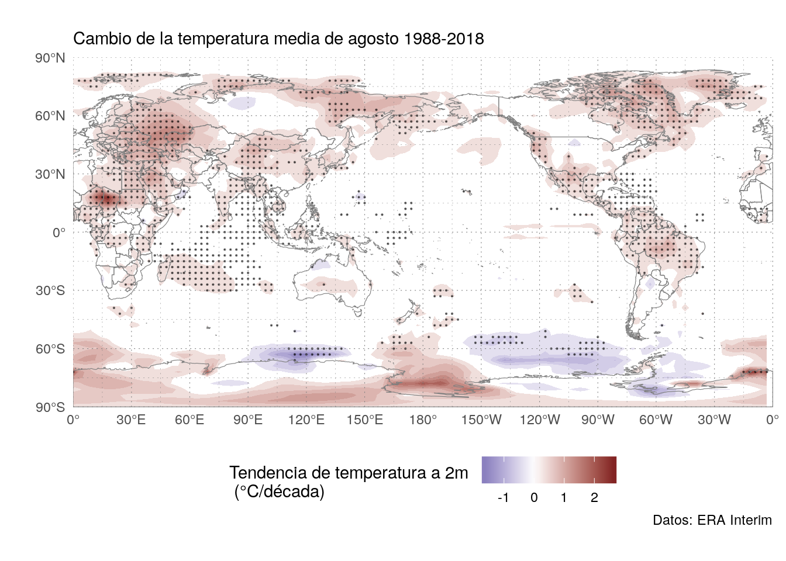
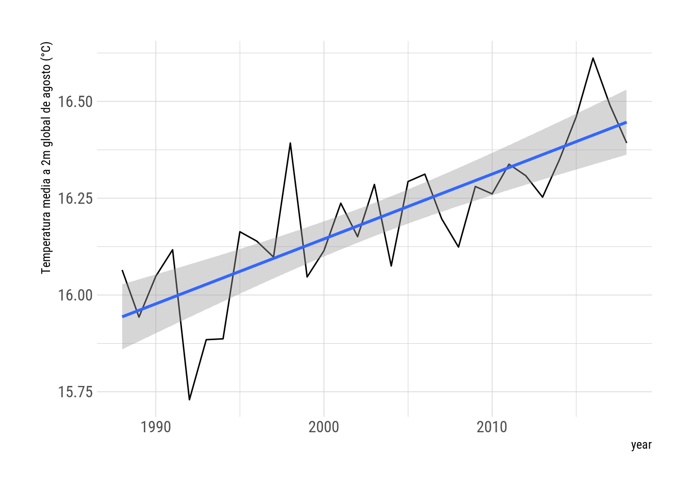

Midiendo el calentamiento global con ecmwfr
In English: Using ecmwfr to measure global warmingPara mi investigación necesitaba bajar datos meteorológicos grillados del ERA-Interim, que es una base de datos generada por el ECMWF. Bajar los datos en su sitio web es muy incómido y requiere muchos clicks. Por suerte, me encontré con el paquete ecmwfr con el que pude bajar los datos directamente desde R y muy fácilmente. Una de las cosas geniales del código abierto, es que los usuarios pueden ser colaboradores, así que sugerí algunas cosas y aporté un poco de código.
Ahora, una nueva versión está de camino a CRAN, así que quería mostrar un pequeño ejemplo de lo que se puede hacer con el paquete.
Para bajar datos de los servidores del ECMWF hace falta tener una cuenta. Si van a seguir estos pasos, antes que nada van a tener que crearse una y agregar la key del API al keyring de ecmwfr. Esto se hace todo interactivamente con este comando:
library(ecmwfr)
wf_set_key(service = "webapi")Eso los lleva a la URL correcta donde pueden conseguir la clave y después configura todo para usarla.
Lo segundo que hace fatla es un request válido. Como la API tiene un montón de dataset distintos, con distinta resolución temporal y otras propiedades, armar uno desde cero es más bien complicado. Es preferible ir a la página y usar su interfaz para crear un request básico del dataset de interes. En mi caso, voy a usar datos mensuales de ERA Interim.
ERA Interim request
Se puede ver que no hay forma alguna de descargar todos los años usando la interfaz web. Pero abajo dse todo hay un botón que dice “View the MARS request”.
ERA Interim MARS
Y eso provee el texto del request que después voy a modificar un poco. En R, convierto este template en una lista usando la addin de RStudio “MARS to list” (pero si quieren peuden hacerlo a mano). Agregué format = "netcdf" al final para que me devuelva todo en formato NetCDF.
Después le paso esa lista a la función wf_archetype().
ERAI_monthly <- wf_archetype(
request = list(
class = "ei",
dataset = "interim",
date = "19790101/19790201/19790301/19790401/19790501/19790601/19790701/19790801/19790901/19791001/19791101/19791201",
expver = "1",
grid = "0.75/0.75",
levtype = "sfc",
param = "167.128",
stream = "moda",
type = "an",
target = "output",
format = "netcdf"),
dynamic_fields = c("date", "grid", "target"))Esto me crea una función (que llamé “ERAI_monthly”) con argumentos “date”, “grid” and “target”. No cambio la lista a mano porque quiero estar seguro de siempre tener un request válido que apunte a ERA Interim. Para este pequeño ejemplo es medio mucho, pero es útil para usar en un proyecto más grande.
Una cosa a notar es que el formato de las fechas es bastante largo. Voy a armarme una función que haga el trabajo pesado por mí.
format_dates <- function(dates) {
dates <- as.Date(dates)
paste0(lubridate::year(dates),
formatC(lubridate::month(dates), width = 2, flag = "0"),
formatC(lubridate::day(dates), width = 2, flag = "0"),
collapse = "/")
}
format_dates(c("2018-01-01", "2018-02-01"))## [1] "20180101/20180201"Ahora estoy listo para descargar los datos! Como nací en agosto de 1988, voy a ver cómo aumentó la temperatura media de ese mes desde ese año. Y como no me interesan mucho los detalles locales, voy a usar una resolución de 3° por 3°.
dates <- seq.Date(as.Date("1988-08-01"), as.Date("2018-08-01"), "1 year")
my_request <- ERAI_monthly(date = format_dates(dates),
grid = "3/3",
target = "august_monthly.nc")
str(my_request)## List of 11
## $ class : chr "ei"
## $ dataset: chr "interim"
## $ date : chr "19880801/19890801/19900801/19910801/19920801/19930801/19940801/19950801/19960801/19970801/19980801/19990801/200"| __truncated__
## $ expver : chr "1"
## $ grid : chr "3/3"
## $ levtype: chr "sfc"
## $ param : chr "167.128"
## $ stream : chr "moda"
## $ type : chr "an"
## $ target : chr "august_monthly.nc"
## $ format : chr "netcdf"Y con esto, uso wf_request() para bajar los datos. Esto puede llevar su tiempo. No porque el archivo sea muy pesado (para nada, sólo 455kb), sino porque el servidor tiene que procesar el request y unir todos los datos. Si están siguiendo esto desde su casa, éste es el momento para ir a hacere un té o, en mi caso, un mate. 🍵
wf_request(request = my_request,
user = "eliocampitelli@gmail.com",
transfer = TRUE,
path = "data",
verbose = FALSE)Ahora que tengo mis datos en “august_monthly.nc”, sólo necesito cargarlo en memoria para analizarlo. Voy a usar mi paquete metR.
library(metR)
library(ggplot2)
library(data.table)august_temp <- ReadNetCDF("data/august_monthly.nc")Primero, mirar un poco la estructura de los datos.
str(august_temp)## Classes 'data.table' and 'data.frame': 226920 obs. of 4 variables:
## $ longitude: int 0 3 6 9 12 15 18 21 24 27 ...
## $ latitude : int 90 90 90 90 90 90 90 90 90 90 ...
## $ t2m : num 273 273 273 273 273 ...
## $ time : POSIXct, format: "1988-08-01" "1988-08-01" ...
## - attr(*, ".internal.selfref")=<externalptr>Es un data frame con un valor de t2m para cada longitud, latitud y tiempo. La temperatura está en Kelvin. Quiero ver un campo; el primero.
# mapa
world <- list(geom_path(data = map_data("world2"),
aes(long, lat, group = group),
size = 0.2, color = "gray50"),
coord_quickmap(),
scale_x_longitude(),
scale_y_latitude())
ggplot(august_temp[time == time[1]], aes(longitude, latitude)) +
geom_contour_fill(aes(z = t2m - 273.15)) +
world +
scale_fill_divergent("Temperatura a 2m (°C)") +
metR:::theme_field()
Los trópicos son más cálidos que los polos, como debe ser.
Luego de conocer los datos, voy a computar la tendencia lineal de la temperatura para cada punto de grilla. Estoy usando una forma muy bruta para evaluar la significancia estadística.
trends <- august_temp[, FitLm(year = year(time), t2m, se = TRUE),
by = .(longitude, latitude)]
trends[, p.value := pt(abs(estimate)/std.error, df, lower.tail = FALSE)]
ggplot(trends[term == "year"], aes(longitude, latitude)) +
geom_contour_fill(aes(z = estimate*10),
breaks = AnchorBreaks(0, 0.25, exclude = 0)) +
stat_subset(aes(subset = p.value <= 0.01),
geom = "point", size = 0.1, alpha = 0.5) +
world +
scale_fill_divergent("Tendencia de temperatura a 2m \n (°C/década)") +
metR:::theme_field() +
labs(subtitle = "Cambio de la temperatura media de agosto 1988-2018",
caption = "Datos: ERA Interim")
No es sorprendente que la tendencia sea positiva en casi todos lados, aunque no es estadísticamente significativa siempre (usando este método muy bruto). Notablemente, la temperatura de agosto no aumentó mucho donde yo vivo.
Voy a construir (a lo bruto) una serie temporal de temperatura media global de agosto promediando todos los puntos de grilla para cada año (usando como peso el coseno de la latitud).
gmat <- august_temp[, .(t2m = weighted.mean(t2m, cos(latitude*pi/180))),
by = year(time)]
ggplot(gmat, aes(year, t2m - 273.15)) +
geom_line() +
geom_smooth(method = "lm") +
scale_y_continuous("Temperatura media a 2m global de agosto (°C)") +
hrbrthemes::theme_ipsum_rc()
De nuevo, no sorprende a nadie que la temperatura global está aumentando. Voy a calcular la tasa de aumento.
trend <- lm(t2m ~ I(year/10), data = gmat)
summary(trend)##
## Call:
## lm(formula = t2m ~ I(year/10), data = gmat)
##
## Residuals:
## Min 1Q Median 3Q Max
## -0.28121 -0.05954 -0.01535 0.06890 0.28129
##
## Coefficients:
## Estimate Std. Error t value Pr(>|t|)
## (Intercept) 255.78307 4.71318 54.270 < 2e-16 ***
## I(year/10) 0.16756 0.02353 7.121 7.77e-08 ***
## ---
## Signif. codes: 0 '***' 0.001 '**' 0.01 '*' 0.05 '.' 0.1 ' ' 1
##
## Residual standard error: 0.1172 on 29 degrees of freedom
## Multiple R-squared: 0.6362, Adjusted R-squared: 0.6236
## F-statistic: 50.71 on 1 and 29 DF, p-value: 7.772e-08La tendencia (1.68 °C/década) es consistente con estimaciones mejores. 🔥